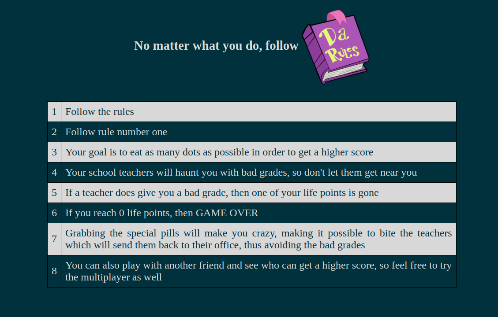
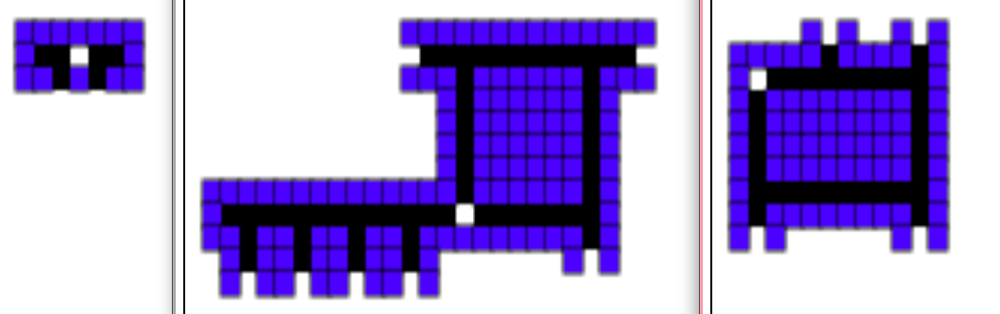
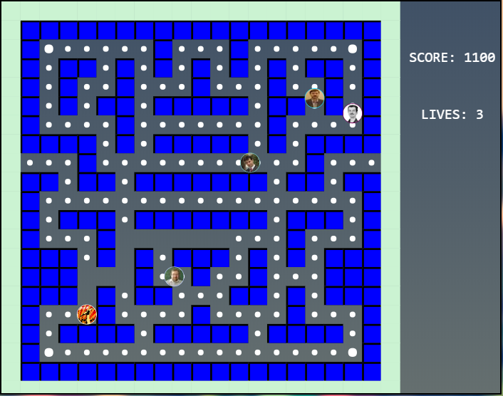

Pamaf is a student project in which the player fights the other teachers in a Pac-man style. This
document
describes the main ideas/concepts, as well as the basics of the website and the game itself.
2. Introduction
Games have always been a way in which people had fun. Originating with Pac-man, Pamaf wants to achieve
the
same greatness by adding a twist to the game: phantoms become teachers and our yellow little friend is
represented by your profile picture. This way, you are able to face one of your biggest nightmares
in a fun and addicting way.
3. Summary
We have started from the idea that we would like a simple interface in which the main point is for the
players to get to the game as fast as possible. We did respect that, but we have also added a few other
pages, like History and Rules. There is also a Contact page if you ever feel the need to reach us.
There have been ups and downs and a lot of changes during the first phases of development, but overall
we
think that we've done a good job on having a layout that is fast, good on the eye and also easy to
understand and easy to navigate.
4. Website basics
Hello, friend! Let's take a closer look at our website ~
HOME
Welcome to Pamaf! We hope that you're ready for some fun. But do not rush!
We're going to play a little bit later.
This is our main page, as you may observe.
We advise you to firstly be aware of the rules of the game. Therefore, look upon the RULES
page.
RULES

Rules without history? Nope. Check out HISTORY page as well. You might find some interesting
stuff in there.
HISTORY
Interesting, huh? Now, you might be ready to check out the PLAY section.
PLAY
Now that you've waited enough, we can finally introduce you to our game.
Please, check bellow each picture for some possible useful info.
Once you enter the PLAY section, you may choose whatever game mode you prefer by clicking
SINGLEPLAYER or MULTIPLAYER, you can check
your score and other personal data by pressing PROFILE or you might adjust some settings by
pressing SETTINGS.
By choosing any game mode, you're asked to identify yourself (to connect via Facebook, Google
or Github).

If you choose SINGLEPLAYER mode, you begin the game by being teleported in the UAIC Faculty of
Computer Science
1st year map, in one of the hallways that are very known by students in the building, floor 2.
(classrooms 308, 309) Later in the game, you would find 2 more hallways, for 2nd and 3rd
college years. (The picture shows the 3 legendary hallways)
This is how the PROFILE section looks like. The picture used for your account is the one you
have on the platform you've logged in with.
This is the SETTINGS section in which you might adjust the sound volume.
When you choose MULTIPLAYER as a game mode, this is the menu that shows up.
If you want to create a new game lobby, you simply generate a new lobby token. Otherwise, you
might simply
join one by using a lobby token. Have fun!

This is how the game looks after you've entered any of the game modes.
In the MULTIPLAYER mode though, there won't be teachers bots (ghosts), but a player with the
power of a ghost.
TEAM
Aand, this is us. Nice to meet you.
CONTACT
Feel free to contact us through the CONTACT page. Constructive feedback is always accepted.
5. Game info
In our game, the main player (the creator of the game) plays the role of the main character
from the original game, Pacman,
while the other player plays the role of the ghost. Player ONE collects points and runs away
from the ghost/player TWO and
if the luck is in his favor, he might find a special dot/point that gives him the mighty power
that enables him to eat player TWO.
Player TWO follows player ONE as he can eat him, but he must run away when his opponent finds
that special dot/point that makes
him immortal for some seconds. One cannot simply stand the mighty power of the special dot.
6. Demo
Now that you've read everything about us & our work, you are ready for the next step.
Watch this informative demo of our version of Pac-Man & give it a shot whenever you feel
ready. Good luck!
We thank you for reading this Scholarly Article and we'll see you soon! Cheers!